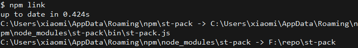
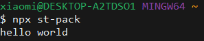
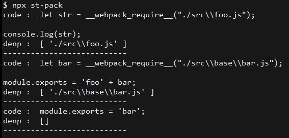
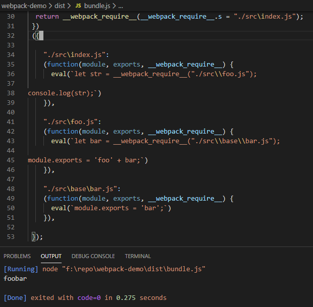
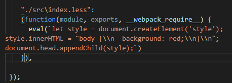
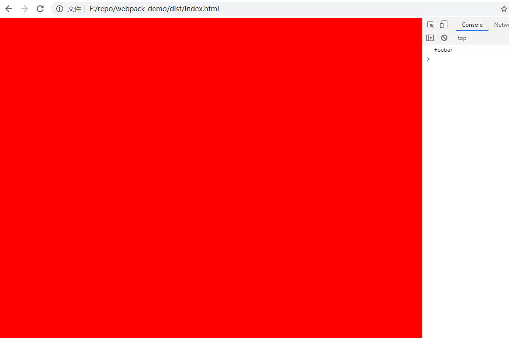
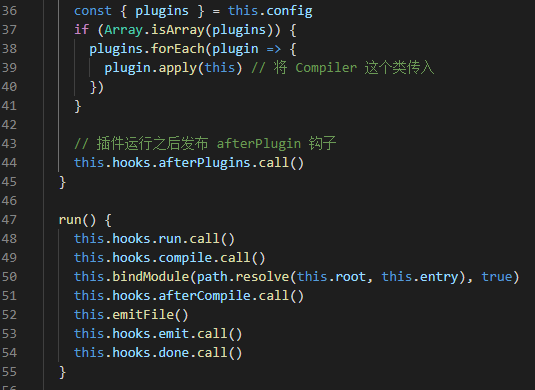
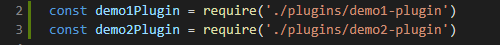
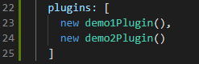
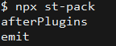

这个是探究 Webpack 本质的系列文章，会详细讲解如何手写一些源码如 Webpack, loader, plugin 等等，本文主要讲解的是如何手写一个 webpack
初始化项目
项目的目录如下
|-bin |
在 package.json 文件中追加
// package.json |
这个是方便在执行 st-pack 命令时 node 去找对应的 js 执行
然后是 st-pack.js 文件
// st-pack.js |
开头的 shebang 表示是在 node 环境下执行 js 代码
然后在项目的主目录执行 npm link, 就会看到如下的信息

这个就是方便你在调试的时候，在别的项目中执行 npx st-pack 时，系统会去对应的 st-pack 目录下去寻找 st-pack.js 文件，并用 node 去执行它，本质上来说就是建立了一个软链接
然后你在随便一个目录执行 npx st-pack，出现 hello world 就算项目初始化成功

webpack 分析以及处理
首先说下流程，一般来说，我们在使用 webpack 时，webpack 会解析对应项目下的 webpack.config.js 文件，抽取里面的配置信息传递给一个 Compiler 编译，由这个 Compiler 来执行之后的代码
// st-pack.js |
创建依赖关系
新建一个 lib 目录，在这个目录下新建一个 compiler.js 文件
这个里面主要是构造一个 Compiler 的类，然后里面主要有两个方法: bindModule(创建模块间的依赖关系) 以及 emitFile(完成后发送最终的文件到某个目录下)
bindModule 的逻辑是这样的，首先需要获取到模块的源码和名字，然后再将模块的源码和该模块的 父级路径 传给一个 parse 函数，由这个 parse 函数来解决源码以及依赖的问题。本质上就是将模块的源码进行改造，然后返回一个依赖的列表。比如将 require('./a.js') 变成 _webpack_require_('./src/a.js')，如果 a.js 中还有其他的依赖，则需要递归的去查找对应的包然后做 parse，最后再把模块的路径和模块中被改造后的源码对应起来
// lib/complier.js |
AST 递归解析
如果要从头开始自己写一个 ast 编译工具未免太麻烦了，这里直接用如下几个工具库
- babylon 主要将 code 转换成 ast
- @babel/traverse 截取并更新 ast node
- @babel/types 一个类似于 lodash 的用于处理 ast 的工具包
- @babel/generator 将 ast node 转换成 code
直接安装
yarn add babylon @babel/traverse @babel/types @babel/generator |
由于 traverse 和 generator 是 es6 模块，所以这里用 require 引入时需要在后面加 default 才能拿到这个函数
// babylon 主要将源码转成 AST |
这里递归解析的目的就是改名字，所以逻辑的流程就是
- 将模块源码转成 ast
- 在 ast 内部修改
require，并且收集依赖关系 - 将修改过后的 ast 转换成新的 code
// lib/compiler.js |
然后在 bindModule 函数中递归的建立依赖
// 模块里面还有依赖的就要递归建立依赖关系 |
在 bindModule 函数中打印 newModuleSource 和 dependencies
... |
在其他项目目录执行npx st-pack 结果可看到

生成打包结果
在生成打包结果之前，必须先要一个模板，如果只是手动拼字符串太麻烦了，所以这里使用 ejs 来用于这次的模板工具
yarn add ejs |
然后是模板代码, 在项目下新建目录 template，里面存放的是 main.ejs
// main.ejs |
这里顺便说下
ejs的一点语法，它是用<%%>来包裹代码块的, 如果要换行就要加上去，其中<%-xxx%>这种形式表示xxx是里面的一个 变量，需要注意前面的-号
可以看到这里的原理是，我们构建了一个 ejs 的模板，然后在这个模板里面插入了变量 entryId 以及 modules。代码从整体上是一个 IIFE(立即执行函数)，代码最开始的 modules 这个 参数 被传入时是一个 {'模块路径': '模块执行代码'} 的 hash，它经历了如下的步骤
- 声明一个模块的缓存
- 定义一个
__webpack_require__的函数- 检查模块是否有缓存，有缓存就直接返回
- 没有缓存就直接创建一个模块，然后把它添加进缓存
- 执行模块里面的代码
- 标致模块已经加载
- 返回该模块的 exports 对象
- 加载模块并返回 exports 对象
比较需要注意的是两段代码
... |
这两句代码应该来说是最核心的，因为有一个入口文件，它执行了对应入口文件的代码时，会首先去找依赖，传一个 __webpack_require__ 回调函数过去，然后这个再次执行了 __webpack_require__ 回调函数后，再去寻找依赖，相当于就是一个递归的过程，当所有的递归完成后，所有的代码包括有依赖关系的都将执行完成
接下来需要补充的就是代码的输出了，即 emitFile 函数
// lib/complier.js |
上述代码的逻辑很简单，就是 找出配置中的 path 和 filename，使用 ejs 渲染模板，将真正的 code 代码输出到指定的目录中
完成后，到有配置 webpack.config.js 项目中执行 npx st-pack，出现如下效果

增加 loader 的解析机制
为了简明扼要，这里用 css 的 loader 来做解析工作
在测试项目的 webpack.config.js 配置文件中加上
... |
这里需要注意的是 loader 的执行顺序是 先添加进去的后执行，所以这里的顺序是 less-loader 先于 style-loader 执行
然后在项目根目录新建目录 loader, 里面添加两个文件 less-loader.js 以及 style-loader.js，这两个 loader 可以自己写，由于 less-loader 文件需要 less，所以在那之前先执行
yarn add less |
执行完成后可以写 less-loader 了
const less = require('less') |
这个 loader 的逻辑很简单，就是利用 less 将传入的 css 代码进行 render。这里要注意的是需要将代码中的 \n 字符转换成 \\n，不然浏览器会报错
然后是 style-loader 的代码
function loader(source) { |
逻辑也很简单，就是简单插入一段 style 标签
同时这里也可以看到，所谓的
loader不过也只是一个 函数 而已。它只是个利用了其他的node的工具解析 code，然后再返回解析后的结果的这么一个 加载器
写好了 loader 之后，就应该在 st-pack 项目中的 lib/compiler.js 的 getModuleSource 函数中做处理了。为什么是这个函数？因为它是做 code 解析的时候会用到的啊
getModuleSource(modulePath) { |
这里的逻辑就是如下
- 解析配置文件中的
rules - 处理每个
rules中的规则 - 如果规则(test)匹配，说明找到对应的后缀的文件了，这个时候就可以拿出其
use，用loader去解析代码了 - 从
use数组倒序加载loader去做解析，并且这个过程是递归的
最后在测试项目的 src 目录下新建 index.less，内容为
body { |
并且在 index.js 中引入
let str = require('./foo.js') |
这个时候执行 npx st-pack，查看 bundle.js

然后在 dist 目录新建 index.html，引入 bundle.js，用浏览器打开 index.html

增加 plugin 解析机制
webpack 的插件机制其实很简单，就是在对应的生命周期的位置发布信息，而原来订阅到这些信息的插件收到这些信息时，就会执行对应的回调，本质上就是利用 发布订阅模式来实现 webpack 到对应的生命周期时执行对应的代码
首先为了方便这里使用 tapable 这个库，tapble 是一个用于为 plugins 创建钩子的库，它里面暴露了很多 hooks 类，目前这里使用 SyncHook 这个类来进行开发
先是安装 tapable
yarn add tapable |
在 lib/complier.js 文件中引入 tapable
const { SyncHook } = require('tapable') |
在 Compiler 类中，增加了 hooks 钩子
// 插件的生命周期钩子，这里为了方便统一使用同步的方式 |
然后将 config 中的 plugins 配置中的 plugin 的 apply 函数中的 this 也就是 Compiler 传入，让插件可以得到 Compiler 对象并订阅事件
const { plugins } = this.config |
然后 call 对应的生命周期钩子发布事件
|

在测试项目目录创建 plugins 目录，然后写两个 plugin 插件
demo1-plugin.js
class Demo1Plugin { |
demo2-plugin.js
class Demo2Plugin { |
在其 webpack.config.js 文件中引入并使用


这里要强调的一点是，对于同步的钩子(如 SyncHook) 而言, tap 是添加 plugin 的唯一有效的方法，当然还有其他的异步钩子，这里不详细说，详情可以去看 tapble 官方文档说明
在测试项目根目录执行 npx st-pack 可以看到

可以看到其正确的打印出了生命周期的顺序
总结
由以上的分析可以看到，一个最基本的 webpack 的流程是这样的
webpack在拿到配置文件后，将文件的配置传给一个Compiler对象，由这个对象run来处理对应的打包逻辑Compiler主要做的就是两件事，递归创建依赖关系 和 生成打包后的文件- 在创建依赖关系的过程中，需要将模块的源码转成 ast，然后再遍历这个 ast node, 在遍历的过程中修改源码，最后再生成源码返回，此时返回的是一个修改过后的模板，用
ejs渲染 - 模板本身就是 IIFE(立即执行函数)，也就是一个闭包，它通过这个函数去递归的执行对应模块的源码，直到最后输出结果
- 在解析
loader，越靠后的越先执行。loader本质上也是解析对应的loader源码执行的产物，不同的地方在于loader中的参数即源码source是一个接着一个传递下去的，即loader之间是有一个传承的关系，他们的参数是相关联的。所以loader作为加载器，它的目的就是 加载代码 -> 修改代码 -> 执行代码 - 在解析
plugin时，本质上就是通过webpack暴露出来的事件，plugin监听这些事件，在截获到这些事件的时候就可以做事情了。主要利用了发布订阅这样的一种设计模式